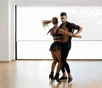
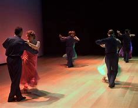
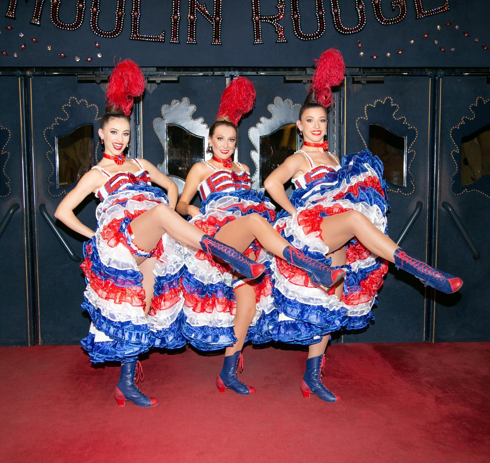
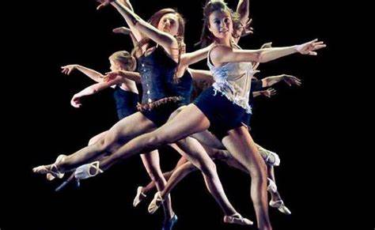
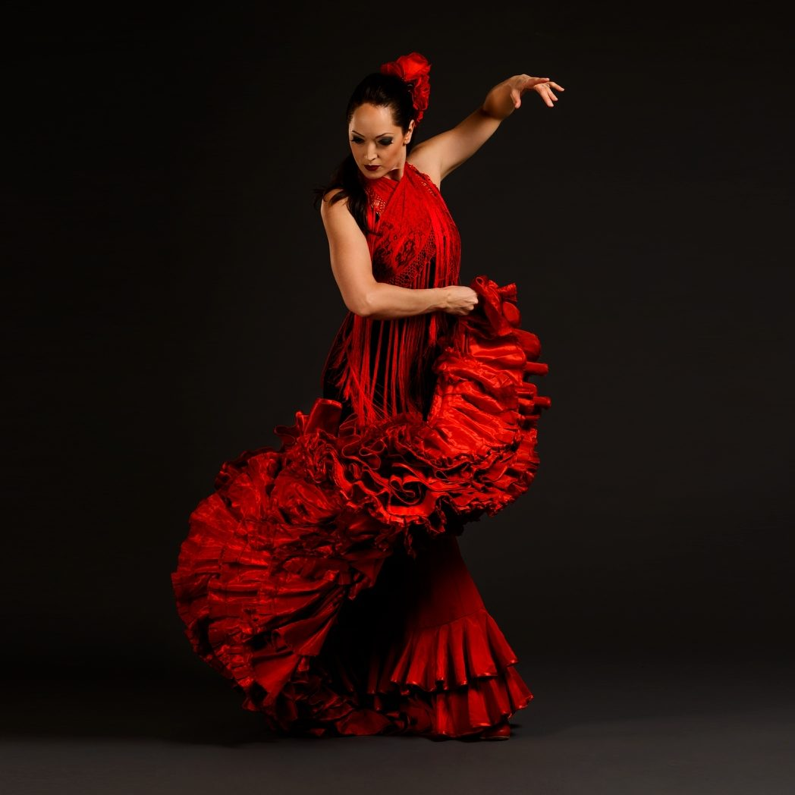

| Estilo | INFORMACION | IMAGEN | HORARIO | LOCAL |
|---|---|---|---|---|
| BALLET | El ballet clásico o danza clásica es una forma de danza cuyos movimientos están basados en el control total y absoluto del cuerpo, se recomienda empezar desde temprana edad debido a su grado de dificultad. A diferencia de otras danzas, en el ballet cada paso está codificado. Participan invariablemente las manos, brazos, tronco, cabeza, pies, rodillas, todo el cuerpo en una conjunción simultánea de dinámica muscular y mental que debe expresarse en total armonía de movimientos. | Las clases son de: 12:00 p.m a las 2:00 p.m |
LOCAL TORRES
|
|
| BACHATA | La bachata es un género musical bailable originario de República Dominicana dentro de lo que se denomina folclore urbano. Está considerado como un derivado del bolero. En la ejecución de la bachata tradicional, las maracas del bolero fueron sustituidas por la güira, se asumió la ejecución virtuosa y libre del bongó propia del son cubano y se incorporaron guitarras al estilo de los tríos latinoamericanos populares en Cuba y Puerto Rico. |  | Las clases son de: 2:30 p.m a las 4:30 p.m |
LOCAL TORRES |
| BAILE DE SALON | Los bailes de salón son un conjunto de bailes de pareja, que se disfrutan social y competitivamente en todo el mundo.Debido a sus aspectos de espectáculo y entretenimiento, los bailes de salón también se disfrutan ampliamente en el escenario, el cine y la televisión. Los bailes de salón pueden referirse, en su definición más amplia, a casi cualquier tipo de pareja bailando como recreación. |  | Las clases son de: 5:00 p.m a las 7:00 p.m |
LOCAL TORRES |
| CANCÁN | El cancán o can-can es un baile de alta energía y exigencia física que se convirtió en un conocido music hall en la década de 1840, continuando su popularidad en el cabaré francés hasta nuestros días. Originalmente bailado por ambos sexos, está tradicionalmente asociado al femenino. Sus principales características son las patadas altas, split y piruetas varias. La melodía que más se asocia es el Galop infernal del Orfeo en los infiernos de Jacques Offenbach. |  | Las clases son de: 10:00 a.m a las 12:00 p.m |
LOCAL MISIONES |
| DANZA CONTEMPORANEA | La danza contemporánea surge como una reacción a las formas clásicas y probablemente como una necesidad de expresarse más libremente con el cuerpo. Es una clase de danza en la que se busca expresar una idea, un sentimiento, una emoción, pero mezclando movimientos corporales propios del siglo XX y XXI. Los movimientos se originan en la mente del bailarín y necesitan un contexto simbólico para conectar con la realidad, creando un puente entre la persona que baila y el mundo que la rodea. |  | Las clases son de: 12:30 p.m a las 2:30 p.m |
LOCAL MISIONES |
| FLAMENCO | El flamenco es un género musical español que se desarrolló en Andalucía, especialmente en las zonas de Cádiz y sus puertos, San Fernando, Jerez de la Frontera Sevilla y los pueblos de su provincia como Lebrija y Utrera, Huelva, Granada y Córdoba así como en algunas áreas de la Región de Murcia, Castilla-La Mancha y Extremadura.Sus principales facetas son el cante, el toque, y el baile, contando también con sus propias tradiciones y normas. |  | Las clases son de: 3:00 p.m a las 5:00 p.m |
LOCAL MISIONES |
Mas informacion sobre estilos de Danza.
| INICIO |